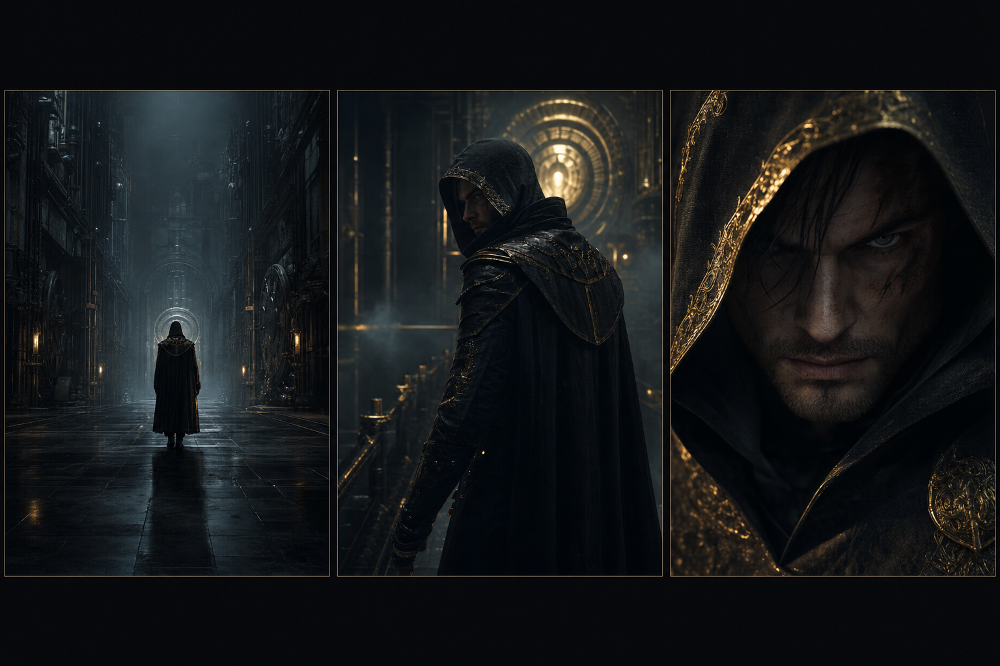
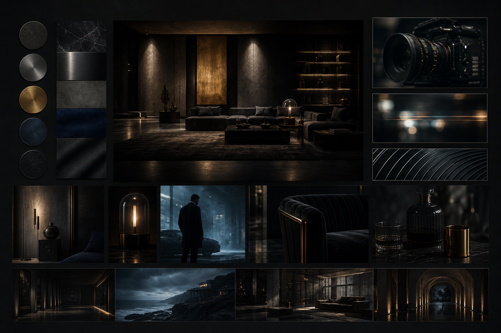
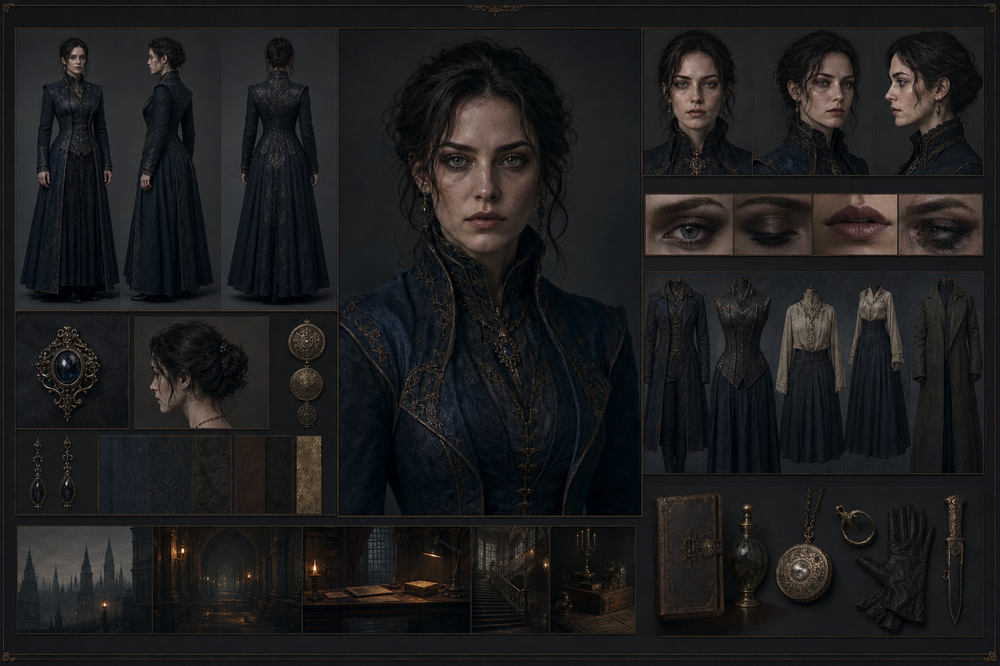
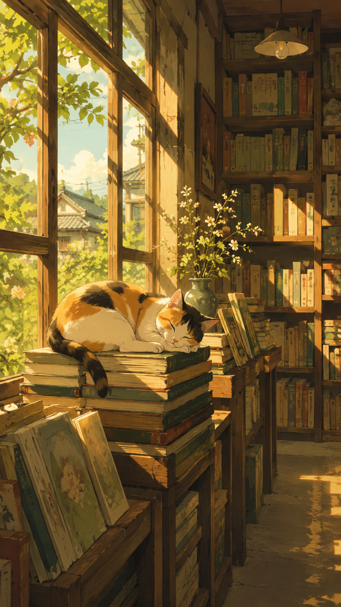
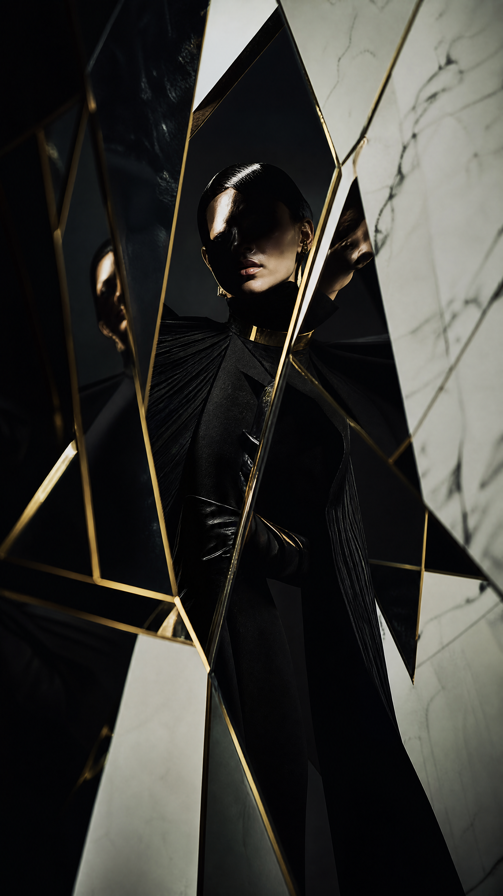
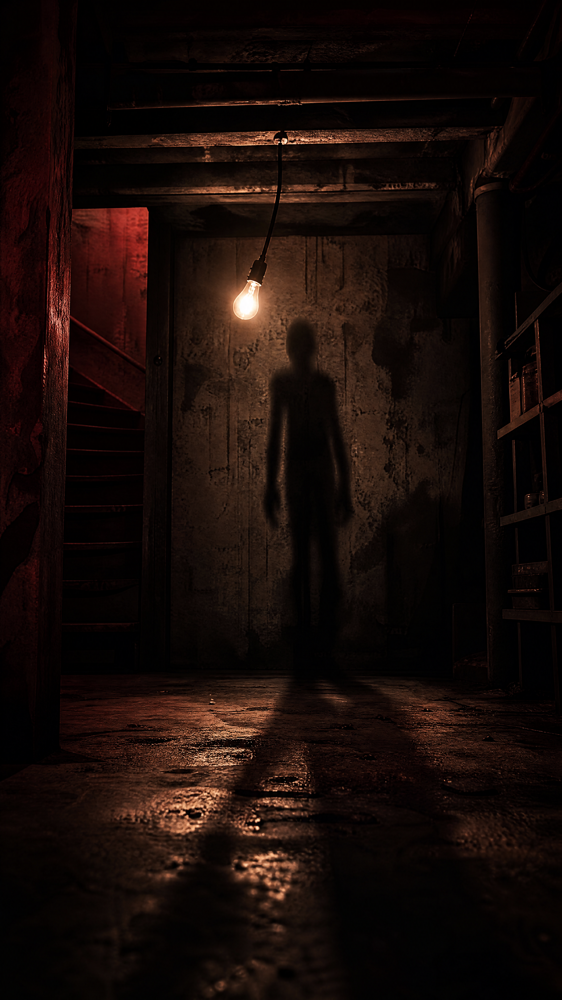

Five Roles · One Pipeline
不是聊天机器人，是五个AI角色的制片团队
编剧理解你的故事，导演掌控叙事节奏，服化道构建视觉世界，音乐总监设计声音情绪，分镜师生成可交付的视频提示词——五步接力，每步确认，产出可直接用于专业制作的结构化资产。
编剧 KAI
拆解故事 · 生成叙事结构
导演 KAI
节拍分析 · 场景调度
服化道设计师
角色场景 · 视觉设计
音乐总监
配乐方案 · Suno提示词
分镜师
视频提示词 · 交付清单
📋 设计资产
自动产出设计资产
5-Stage Pipeline
不是聊天。五个AI角色，接力创作。
编剧、导演、服化道、音乐、分镜——每个角色只做一件事，做到极致。你审核每一步，确认后再交接。不会一口气跑偏，不会答非所问。
Pricing
按质按量，透明计费
按字数计费，用多少扣多少。两种创作模式可选——标准够用，精致出大片。没用完的字数自动累积。
样片版：稳定精准，适合日常创作和批量产出
入门体验
¥0
30,000 字/月
本月剩余 12,000 字
- 完整 5 步创作流程
- 基础资产导出
- 仅限样片版模式
专业创作
¥68/月
300,000 字/月
本月剩余 225,000 字
- 全部入门功能
- 样片版 + 母带版双模式
- 项目云端保存与分享
- 未用字数累积至下月
团队协作
¥188/月
1,000,000 字/月
本月剩余 450,000 字
- 全部专业版功能
- 最多 5 人协作共享字数池
- API 接入权限
- 优先技术支持
母带版创作消耗 3 倍字数 | 所有方案支持 7 天无理由退款 | 字数月底清零（专业版+团队版可累积）
FAQ
常见问题
Case Studies
不是作图工具，是提示词工厂
每个案例走完五步流水线，产出的是可直接喂给 Seedance/可灵/Midjourney 的精准提示词资产——不是聊天记录，不是好看但没用的图。

古风反转短片 中国古代
雨夜真相 · 4段 · 9:16竖屏
编剧 KAI 产出 · 叙事结构
"雨夜古风驿站，青衫女子执伞独行。3段叙事：悬念起→身份揭→情感落。每段含镜头调度+服装材质+光影设计提示词。"
→ 分镜提示词可直喂可灵/Seedance生成视频

城市情绪广告
凌晨便利店 · 3段 · 品牌竖屏
导演 KAI 产出 · 节拍分析+场景清单
"凌晨便利店荧光灯下的孤独感。导演阐述拆出3个节拍：等待→相遇→告别。每个节拍匹配了镜头焦段和调色方案提示词。"
→ 导演阐述可直接用做客户提案

年代情怀短片
老厂区的夏天 · 5段 · 16:9横屏
服化道设计师 产出 · 角色+场景设计
"1990年代中国南方厂区，红砖宿舍楼、二八大杠自行车、的确良衬衫。每个角色外观+场景道具都给出了可直接喂给Midjourney的提示词。"
→ 场景提示词可直接导入Blender做previs

日系治愈短片
猫与老书店 · 3段 · 小红书竖屏
服化道设计师 产出 · 场景设计
"昭和风木质老书店，暖黄钨丝灯从书架间隙渗出。场景+道具+光影提示词三件套，每一条都精确到材质和年代感——复制粘贴进Midjourney即可出图。"
→ Midjourney/SD可直出角色场景图

时尚概念大片
镜中幻境 · 5段 · 品牌竖屏
服化道设计师 产出 · 服装+场景
"独立设计师品牌概念短片。从品牌关键词出发设计视觉叙事线——服装材质、灯光方案、场景气氛，每条提示词都可以直接交给拍摄团队或AI生图。"
→ 服装提示词已对接线下拍摄团队

暗黑悬疑短剧
地下室第7天 · 4段 · B站横屏
分镜师 产出 · 视频提示词
"哪个镜头埋线索、哪个镜头误导观众——每条分镜提示词精确到焦段、光线角度和叙事节奏。直接复制进可灵/Seedance，从文本到视频零损耗。"
→ 13条视频提示词可直喂可灵/Seedance
Contact
联系与反馈
有任何问题、建议或合作意向，随时联系我们。
电话 / 微信
18030708519
邮箱
623743006@QQ.com
微信
18030708519